Attention lecture 5: Distraction
2024-10-09
Attention: a bridge between Perception and Cognition

- Our mental architecture is massively-parallel, followed by bottleneck(s)
- To deal with this architecture, we have:
- Crude salience and alerting mechanisms
- Guidance of attention by memory
- This helps explain distractions
Some things CALEB OWENS said
Can’t multitask
Listening to music impairs attention
Outline of Lectures 1-4
- Why we need selective attention
- Overt attention
- Bottleneck architecture of the visual system necessitates covert attention
- and 3. Kinds of selection, parallel versus serial processing
- Evolutionary need for vigilance
- Because of bottleneck, we evolved crude salience and alerting mechanisms
- Bottom-up attention (Chapters 7 and 9)
- Our behavior reflects competition between top-down and bottom-up
- Combinations of features typically aren’t processed in parallel
- Selective attention is needed to combine features (Treisman)
- Feature selection is compulsorily global
- Maybe because What processing (features) occurs on different pathway than Where pathway, which mediates spatial attention
- Evolutionary need for vigilance
- Shape
- Combining features within a feature dimension
- Quantifying shape processing efficiency with dipoles
- Change blindness
- In blank screen sandwiches, have to attend to location to detect change
- A “grand illusion” of visual experience?
- Poor peripheral vision can prevent change detection
- Role of flicker / motion detectors
- Memory for important locations can drive attention
2,3. Kinds of selection, parallel versus serial processing
Lecture 5: Distraction
Limited processing capacity + Vigilance = Distraction
What most distracts you during lecture?
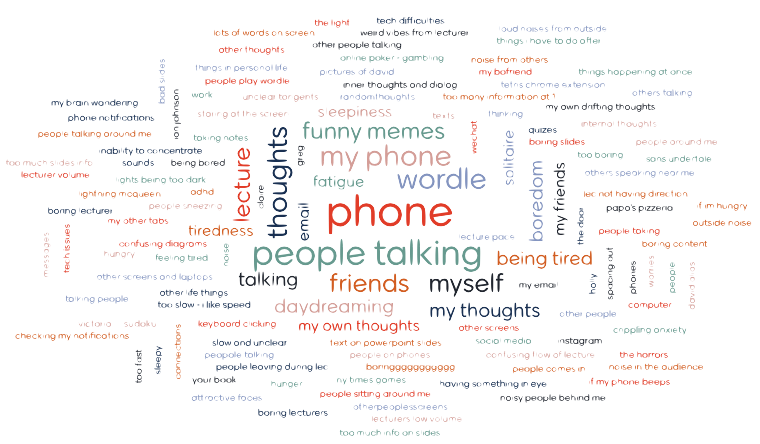
Phones!
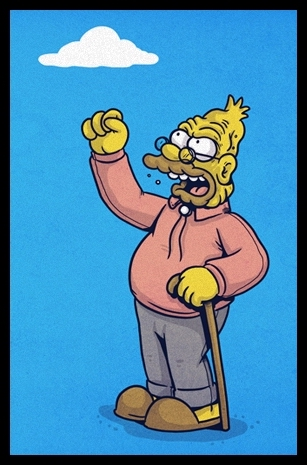
Ezra Klein on mobile phones
In 1990, imagine I told you that I was going to invent a sinister tool…
As people used it, their attention spans would degrade, as the tool would constantly shift their focus, weakening their powers of concentration and contemplation.
This tool would show people whatever it is they found most difficult to look away from — which would often be what was most threatening about the world, from the worst ideas of their political opponents to the deep injustices of their society.
It would fit in their pockets and glow on their night stands and never truly be quiet; there would never be a moment when people could be free of the sense that the pile of messages and warnings and tasks needed to be checked.
What would you have thought this engine of distraction, division, and cognitive fracture would do to humanity?
Phones!
- Alerts = Bottom-up attention.
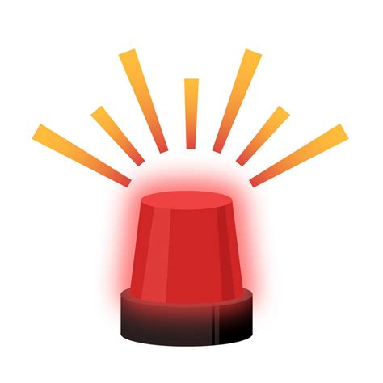
- Learning (conditioning) to respond to alerts = Top-down attention?
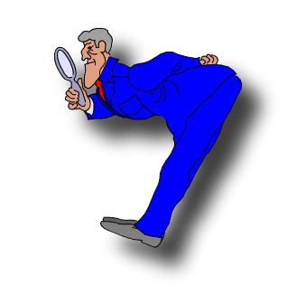
- Opening your phone even when there’s no alert = Top-down attention
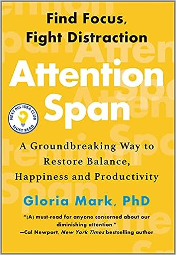
Our mind becomes like a pinball propelled from lever to lever by text chimes, social media notifications and targeted ads…
Without top-down control of our attention, we open ourselves up to stimuli that steer our attention for us.
Controlling bottom-up sensory events
Notification detox
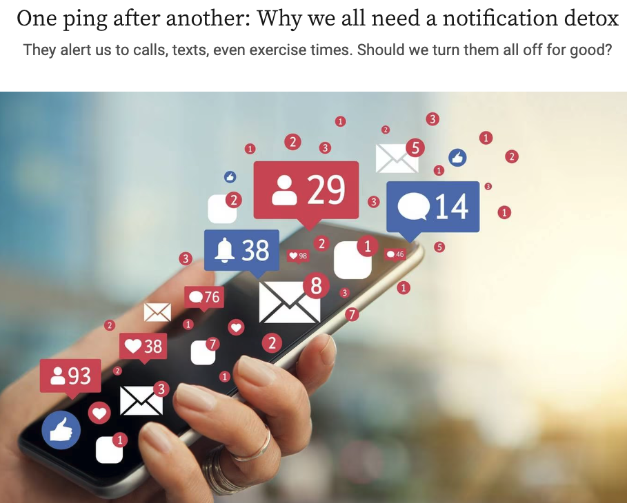
Irish Times articleTake some advice from the experts on phones and apps!
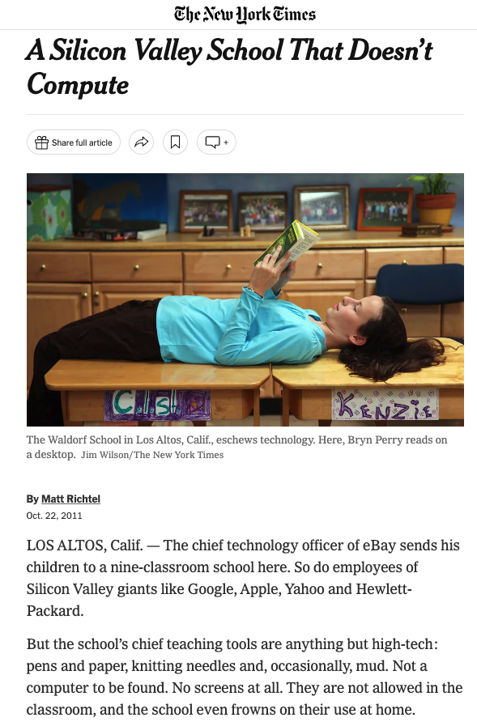
What do you do to shut out the world?

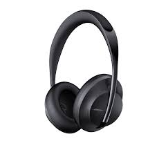
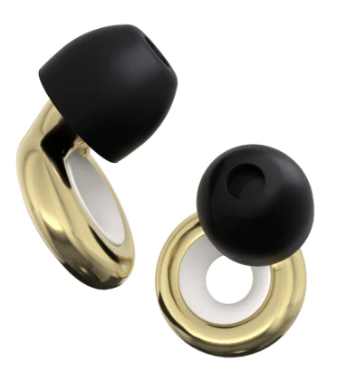
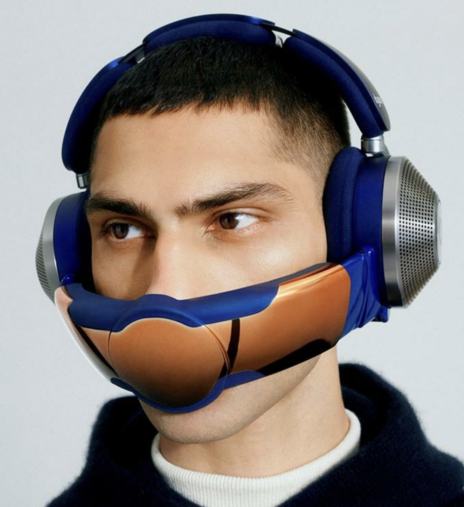

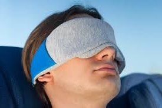
Phones!
- Alerts = Bottom-up attention.
- Learning (Ch. 16) to respond to alerts = Top-down attention?
- Opening your phone even when there’s no alert = Top-down attention
Distraction study
Notifications off
4 minutes of silent reading
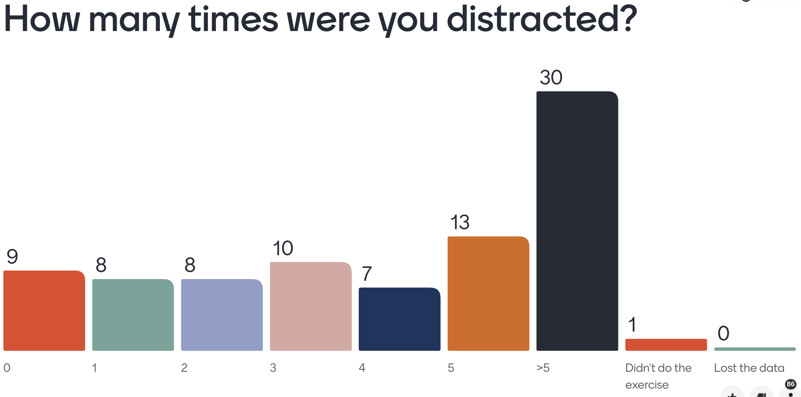
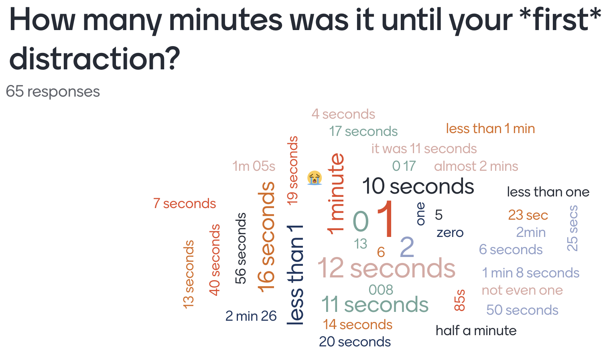
What distracted you?
What distracted you?
What distracted you?
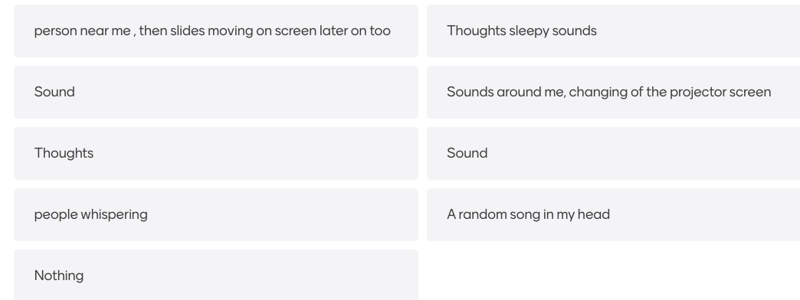
- “Thoughts”
2023
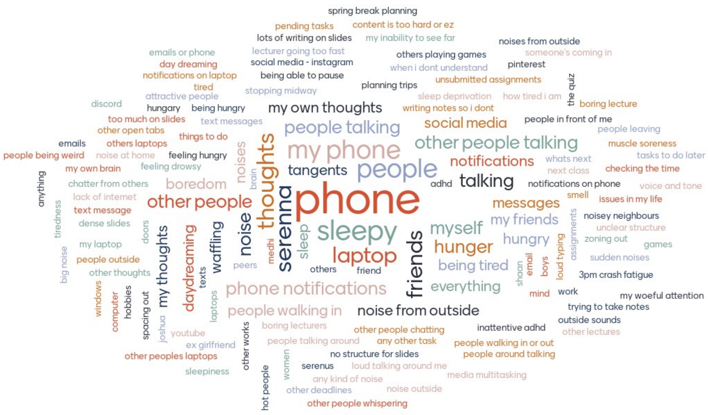
- A lot more to it than sensory events and salience
Distractions, categorised
Sensory events: noise, other peoples laptops, dense slides, muscle soreness, phone
Life issues: issues in my life, other works, other deadlines
Drives: hunger, sleepiness, boys
Cognitive, interest, learning: boring lectures, social media - instagram, phone, tangents, spring break planning, content is too hard or ez
Distractions, categorised
Sensory events (bottom-up): noise, other peoples laptops, dense slides, muscle soreness, phone
Life issues (top-down): issues in my life, other works, other deadlines
Drives: hunger, sleepiness, boys
Cognitive, interest, learning (top-down): boring lectures, social media - instagram, phone, tangents, spring break planning, content is too hard or ez
Distractions, categorised
Sensory events (bottom-up): noise, other peoples laptops, dense slides, muscle soreness, phone Chapter 5
Life issues (top-down): issues in my life, other works, other deadlines. NOT COVERED IN PSYC2016
Drives: hunger, sleepiness, boys. NOT COVERED IN PSYC2016.
Cognitive, interest, learning (top-down): boring lectures, social media - instagram, phone, tangents, spring break planning, content is too hard or ez. MULTIPLE CHAPTERS MENTION MEMORY, + CHAPTER 16
Learning
Association of stimuli with reward (Chapter 16)
- When you open an app, you get interesting things
- Not just interesting, but also a social reward (everyone wants to be liked)
What distracts you during studying?
phone; phone; Phone; Phone; phone; Phone; phone; my phone; cellphone; My phone; buzzing phone; Phone buzzing; My damn phonnneeee :(
My phone, the habit of picking it up all the time
messages/instagram
flat mate coming into my room
The clock
Social media
my boyfriend playing video games right next to me
snacks
vacuumming in the background, remembering random things
My own thoughts
Cans of kombucha being drunk.
my housemates
In 2004, the average time people spent on a single screen was 2.5 minutes.
“I was astounded. That was so much worse than I’d thought it would be,” said Gloria Mark.
But that was just the beginning.
By 2012, Mark and her colleagues found the average time on a single task was 75 seconds. Now it’s down to about 47.
Multi-tasking?
- We can only focus on one thing at a time.
- Task-switching.
- “It’s like we have an internal whiteboard in our minds,” Mark said.
- “If I’m working on one task, I have all the info I need on that mental whiteboard. Then I switch to email. I have to mentally erase that whiteboard and write all the information I need to do email. And just like on a real whiteboard, there can be a residue in our minds. We may still be thinking of something from three tasks ago.”

When have you been most focused?
Menti.com
Get involved in research!
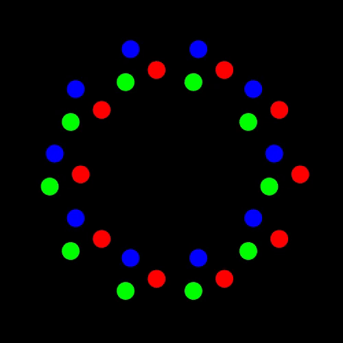
alex.holcombe@sydney.edu.au
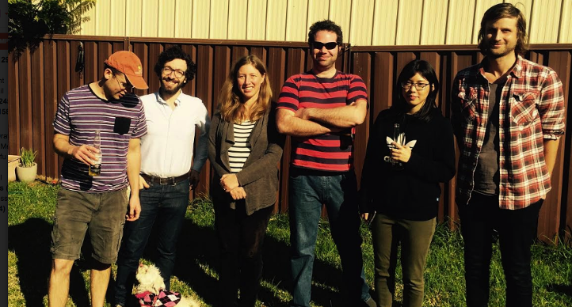
All day, the world makes its demands. There’s so much of it, world
begging to be noticed.
ultrawhelmed sensorium, my self
ultrawhelmed sensorium, my self
taxed with being a self, brimming with living’s rowdy mechanics
and disruptions unremitting,
a thought flits by, then another (an unpaid bill, a jingle’s tenacious refrain)
and, … I attend, as best I can,…
yielding to the most persuasive god, the most recent,
to each thing I say Yes?
Yes!
zealot of whatever calls me next.
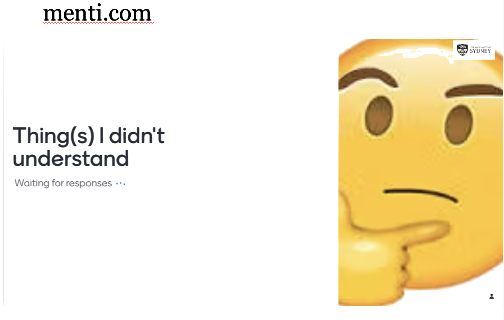
Social facilitation
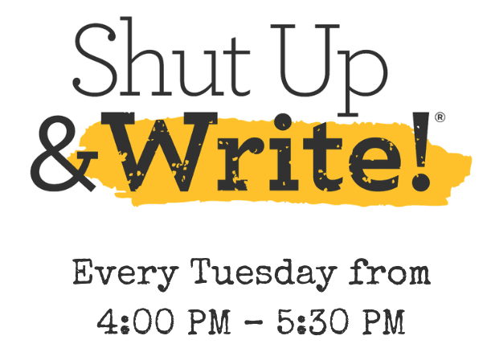
- Harness social attention to keep you on task! - Study groups - Group workouts